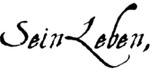
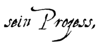

|
18. März 1314: Hinrichtung von Jacques de Molay
 Am 18. März 1314 werden die vier Ritter zur Urteilsverkündung vor die Pforten von Notre-Dame gebracht. Das Urteil lautet lebenslange Kerkerhaft. Bis zu diesem Zeitpunkt hatte Molay und Charnay das wiederholte Versprechen einer bevorstehenden Freilassung bei Kräften gehalten: Sie waren seit sieben Jahren in Kerkerhaft. Eine Rückkehr in den Kerker sollte sie nicht in Verzweiflung stürzen. In seiner Geschichte des Ritterlichen Ordens Sankt Johannis vom Spital zu Jerusalem versichert der Abt von Vertot, dass alle Richter, ja ganz Paris, darauf warteten, dass Jacques de Molay öffentlich seine Geständnisse wiederholen würde. "Wie groß war das Erstaunen, als der Gefangene an den ihm umgelegten Ketten rüttelte und mit selbstsicherer Gebärde zum Rand des Scheiterhaufens vortrat. Dann sprach er mit lauter Stimme, um sich allgemein verständlich zu machen: Es ist nur gerecht, so rief er, dass ich an einem solch schrecklichen Tag und in den letzten Augenblicken meines Lebens eine ungerechte Lüge entdecken und der Wahrheit zum gerechten Triumph verhelfen soll.
Am 18. März 1314 werden die vier Ritter zur Urteilsverkündung vor die Pforten von Notre-Dame gebracht. Das Urteil lautet lebenslange Kerkerhaft. Bis zu diesem Zeitpunkt hatte Molay und Charnay das wiederholte Versprechen einer bevorstehenden Freilassung bei Kräften gehalten: Sie waren seit sieben Jahren in Kerkerhaft. Eine Rückkehr in den Kerker sollte sie nicht in Verzweiflung stürzen. In seiner Geschichte des Ritterlichen Ordens Sankt Johannis vom Spital zu Jerusalem versichert der Abt von Vertot, dass alle Richter, ja ganz Paris, darauf warteten, dass Jacques de Molay öffentlich seine Geständnisse wiederholen würde. "Wie groß war das Erstaunen, als der Gefangene an den ihm umgelegten Ketten rüttelte und mit selbstsicherer Gebärde zum Rand des Scheiterhaufens vortrat. Dann sprach er mit lauter Stimme, um sich allgemein verständlich zu machen: Es ist nur gerecht, so rief er, dass ich an einem solch schrecklichen Tag und in den letzten Augenblicken meines Lebens eine ungerechte Lüge entdecken und der Wahrheit zum gerechten Triumph verhelfen soll.
Ich erkläre deshalb im Angesicht des Himmels und der Erde und bekenne, wenn auch zu meiner ewigen Schande, dass ich das größte aller Verbrechen begangen habe. Was ich tat, tat ich jedoch nur als Zugeständnis für diejenigen, denen man so viel Schreckliches zur Last legt, für einen Orden, den ich heute der Wahrheit halber als unschuldig anerkennen muss. Das Geständnis, das man von mir erwartete, habe ich nur abgelegt, um die schrecklichen Schmerzen der Folter zu beenden und um meine Folterknechte zu erweichen. Ich kenne die Qualen, denen die unterworfen wurden, die den Mut zum Widerruf ihres erzwungenen Geständnisses aufgebracht haben. Aber das grausige Schauspiel, das man hier aufführt, kann mich nicht dazu veranlassen, eine erste Lüge durch eine zweite zu bestätigen. Die Bedingungen sind zu niederträchtig. Ich verzichte frohen Herzens auf mein Leben, das mir jetzt schon mehr als abstoßend erscheint. Was brächte mir eine Verlängerung dieser traurigen Tage, die ich einzig und allein einer Verleumdung zu verdanken hätte?…"
Geoffroy de Charnay, ein Ritter edler Herkunft, die ihn zu einem Verwandten des Königs machte, Präzeptor der Normandie und Bruder des Dauphin der Auvergne, bestätigt diese Aussage und schließt sich dem Widerruf seines Meisters an. Beide Ritter halten an ihrer Aussage fest. Als die Menge unruhig wird, beschließen die Kardinäle, selbst von Unruhe ergriffen und unfähig, die zwei Rückfälligen zu richten, die spät Angeklagten, die endlich zur Wahrheit zurückgefunden hatten, unverzüglich dem Prevoten von Paris zu übergeben. Der König wird benachrichtigt und der versammelte Rat verurteilt sie augenblicklich zum Tode. Ohne das Urteil der päpstlichen Kommission abzuwandeln. Ohne ein kirchliches Gericht einzuberufen. Noch am selben Abend wird auf der Ile de la Cité ein Schaffot errichtet, gegenüber dem Quai des Augustins. Die zwei Ritter, Molay und Charnay, besteigen den Scheiterhaufen, der sich langsam entflammt, und finden in den Flammen einen qualvollen Tod.
Kein italienischer Chronist ließ sich von dem ungerechten Prozess der Templer täuschen - weder Villani noch Dino Compagni, Boccacio (dessen Vater zur Zeit des Prozesses in Paris weilte), der Verfasser der Storie Pistolesi oder Dante (der der Hinrichtung von Jacques de Molay beiwohnte). Allen war die Ironie eines Abenteuers bewusst, bei dem die treuesten Diener des Römischen Hofes, die hartnäckigsten Verteidiger des Glaubens als Ketzer ihr Leben lassen mussten. Die französischen Autoren der damaligen Zeit waren selbstredend etwas vorsichtiger. Sie wagten nicht, sich mit Papst und König schlecht zu stellen, dennoch brachten sie ihre Meinung indirekt zum Ausdruck: Wenn es wahr sei, was man von den Templern behauptete, dann hätten sie ihr Los verdient. Viele der auf Erden Verurteilten wären aber in den Himmel gefahren und dort von Gott mit Liebe und Freude empfangen worden. Auf Erden seien alle dem Papst und seinen Verordnungen unterworfen. Die Kirche ließe sich täuschen, Gott jedoch nicht. Damit ist alles gesagt...
Bien gaaingnié l'avoient celz,
Se voirs estoit qu'en disoit d'elz…
Plusieurs, ou monde condampnez
Sont lassus au ciel couronnez,
Et les aime Diex et tient chiers.
Mais ça aval (ici-bas), en ceste Eglise,
Nous convient trestouz la devise
Tenir du pape et l'ordinance…
L'en puet bien decevoir l'Eglise ;
Mes l'en ne puet en nule guise
Diex decevoir ; je n'en dis plus. Qui voudra die le surplus.…/…
[Anfang]
 |